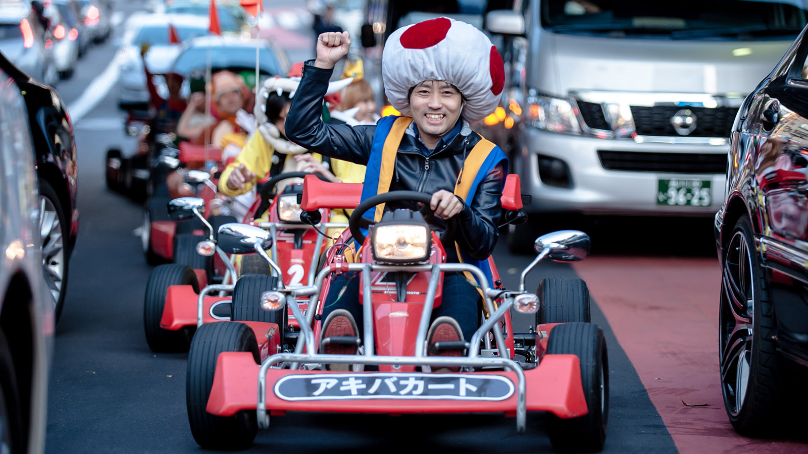

Things to do
- 
Hi there Okinawa lovers and to those just visiting for 3months,
If you're reading this, you either planning to go on a vacation
island wise or just figuring things out since you're already in vacation
in Okinawa.
For this web project, I will be walking you thru some amazing sights while in Okinawa.
Theres two kinds of party life in okinawa
- In door Party
- Out Door Party
While Out door party usually are coordinated at beaches in okinawa, similar to an In door party without the lights. Its more of booze and just chill and relax while you listen to the music dancing or glaring into the ocean view.
In my opinion, most of the relaxed and lay back people comes from areas that is near ocean sights, I usually go to the ocean and just
lay down and do a little swimming when Im stressed out.
I would love to buy a hammock and just take a nap feeling the nice breeze and fall a sleep. The good news is theres actually a lot
of places you can do that here in okinaw if you do your reseach.;)
Japan is well known for anime's and well known characters, archades that only exist in Japan.
you can usally do those in the city.
The good thing about okinawa is, you can do both activities that you can usually do in the city
and water activities, Examples are mario cart,archades,swimming on the beach,snorkle and diving.